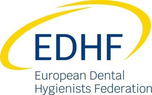

Trade Mark Journal No.2025/011 14 March 2025
WO0000001842730 (35,41,44,45)
Office of origin: European Union Intellectual Property Office (EUIPO)
Date of International Registration:21 November 2024
Date of designation in the UK:
21 November 2024

The mark contains the colours blue and yellow.
International priority date claimed: 5 July 2024
(European Union Intellectual Property Office (EUIPO))
(019050697)
- Class 35
- Advertising; business management, organization and administration; office functions; business research; business management and organization consultancy; business management consultancy; professional business consultancy; personnel management consultancy; psychological testing for the selection of personnel; employment agency services; personnel recruitment; business consultancy in relation to corporate social responsibility; publicity and advertisement services provided by association to its members; commercial and business interest promotion services for investors and entrepreneurs provided by the association to its members; public relations services; lobbying services for commercial purposes; charitable services by means of development and coordination of volunteering programmes and projects; arranging promotion of charitable fundraising events.
- Class 41
- Education; teaching; entertainment; sporting and cultural activities; organisation of seminars; provision of conferences; coaching [training]; training in business management; providing of training in the field of staff management; tutoring; arranging and conducting of workshops [training]; know-how transfer [training]; vocational guidance [education or training advice]; vocational retraining; educational services provided by special needs assistants; teaching and educational services provided by association to its members; publication of books; providing online electronic publications, not downloadable; online publication of electronic books and journals; organising community cultural events; arranging community classes; arranging of events for educational purposes.
- Class 44
- Medical services; veterinary services; hygienic and beauty care for human beings or animals; consultancy, in relation to the following fields: health protection.
- Class 45
- Legal services; security services for the physical protection of tangible property and individuals; consultancy provided by association to its members in relation to the following fields: law, legal regulation, personnel security, workplace safety, consumer rights, production standards, commercial standards, industrial property, data security; online social networking services provided by associations; lobbying services on political and regulatory issues provided by association.
European Dental Hygienists Federation
Representative: AAA LAW, A. Gostauto 40B, LT-03163 Vilnius, LITHUANIA